Matbiips: Bayesian inference in nonlinear non-Gaussian hidden Markov model
In this tutorial, we consider applying sequential Monte Carlo methods for Bayesian inference in a nonlinear non-Gaussian hidden Markov model.
Contents
Statistical model
The statistical model is defined as follows.
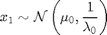
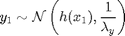
For 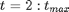
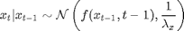
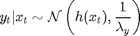
with 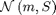 stands for the Gaussian distribution of mean 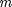 and covariance matrix 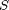, 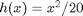, 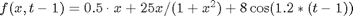, 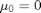, 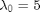, 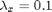 and 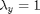.
Statistical model in BUGS language
One needs to describe the model in BUGS language. We create the file 'hmm_1d_nonlin.bug':
var x_true[t_max], x[t_max], y[t_max]
data
{
x_true[1] ~ dnorm(mean_x_init, prec_x_init)
y[1] ~ dnorm(x_true[1]^2/20, prec_y)
for (t in 2:t_max)
{
x_true[t] ~ dnorm(0.5*x_true[t-1]+25*x_true[t-1]/(1+x_true[t-1]^2)+8*cos(1.2*(t-1)), prec_x)
y[t] ~ dnorm(x_true[t]^2/20, prec_y)
}
} model
{
x[1] ~ dnorm(mean_x_init, prec_x_init)
y[1] ~ dnorm(x[1]^2/20, prec_y)
for (t in 2:t_max)
{
x[t] ~ dnorm(0.5*x[t-1]+25*x[t-1]/(1+x[t-1]^2)+8*cos(1.2*(t-1)), prec_x)
y[t] ~ dnorm(x[t]^2/20, prec_y)
}
}Installation of Matbiips
Unzip the Matbiips archive in some folder and add the Matbiips folder to the Matlab path
matbiips_path = '..\..\matbiips\matlab';
addpath(matbiips_path)
Load model and data
Model parameters
t_max = 20; mean_x_init = 0; prec_x_init = 1/5; prec_x = 1/10; prec_y = 1; data = struct('t_max', t_max, 'prec_x_init', prec_x_init,... 'prec_x', prec_x, 'prec_y', prec_y, 'mean_x_init', mean_x_init);
Start BiiPS console
biips_init;
Compile BUGS model and sample data
model = 'hmm_1d_nonlin.bug'; % BUGS model filename sample_data = true; % Boolean [model_id, data] = biips_model(model, data, 'sample_data', sample_data); % Create biips model and sample data
* Parsing model in: hmm_1d_nonlin.bug * Compiling data graph Declaring variables Resolving undeclared variables Allocating nodes Graph size: 279 Sampling data Reading data back into data table * Compiling model graph Declaring variables Resolving undeclared variables Allocating nodes Graph size: 280
BiiPS Sequential Monte Carlo
Let now use BiiPS to run a particle filter.
Parameters of the algorithm. We want to monitor the variable x, and to get the filtering and smoothing particle approximations. The algorithm will use 10000 particles, stratified resampling, with a threshold of 0.5.
n_part = 10000; % Number of particles variables = {'x'}; % Variables to be monitored type = 'fs'; rs_type = 'stratified'; rs_thres = 0.5; % Optional parameters
Run SMC
out_smc = biips_smc_samples(model_id, variables, n_part,... 'type', type, 'rs_type', rs_type, 'rs_thres', rs_thres);
* Assigning node samplers * Running SMC forward sampler with 10000 particles |--------------------------------------------------| 100% |**************************************************| 20 iterations in 3.35 s
Diagnostic on the algorithm.
diag = biips_diagnostic(out_smc);
* Diagnosing variable: x Filtering (f) diagnostic: GOOD Smoothing (s) diagnostic: GOOD
Summary statistics
summary = biips_summary(out_smc, 'probs', [.025, .975]);
Plot Filtering estimates
x_f_mean = summary.x.f.mean; x_f_med = summary.x.f.med; x_f_quant = summary.x.f.quant; figure('name', 'SMC: Filtering estimates') fill([1:t_max, t_max:-1:1], [x_f_quant(1,:), fliplr(x_f_quant(2,:))],... [.7 .7 1], 'edgecolor', 'none') hold on plot(x_f_mean, 'linewidth', 3) xlabel('Time') ylabel('Estimates') legend({'95 % credible interval', 'Filtering Mean Estimate'}) legend('boxoff') box off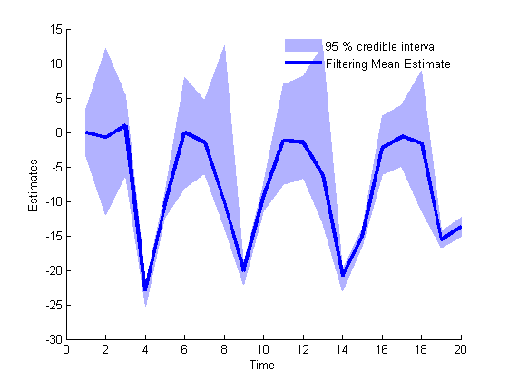
Plot Smoothing estimates
x_s_mean = summary.x.s.mean; x_s_quant = summary.x.s.quant; figure('name', 'SMC: Smoothing estimates') fill([1:t_max, t_max:-1:1], [x_s_quant(1,:), fliplr(x_s_quant(2,:))],... [.7 .7 1], 'edgecolor', 'none') hold on plot(x_s_mean, 'linewidth', 3) xlabel('Time') ylabel('Estimates') legend({'95 % credible interval', 'Smoothing Mean Estimate'}) legend('boxoff') box off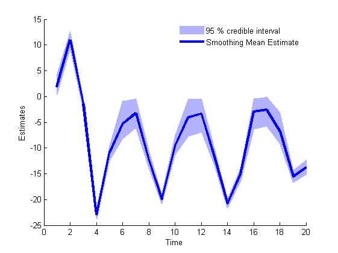
Marginal filtering and smoothing densities
kde_estimates = biips_density(out_smc); time_index = [5, 10, 15, 20]; figure('name', 'SMC: Marginal posteriors') for k=1:length(time_index) tk = time_index(k); subplot(2, 2, k) plot(kde_estimates.x.f(tk).x, kde_estimates.x.f(tk).f); hold on plot(kde_estimates.x.s(tk).x, kde_estimates.x.s(tk).f, 'r'); plot(data.x_true(tk), 0, '*g'); xlabel(['x_{' num2str(tk) '}']); ylabel('posterior density'); title(['t=', num2str(tk)]); end legend({'filtering density', 'smoothing density', 'True value'}, 'fontsize', 12);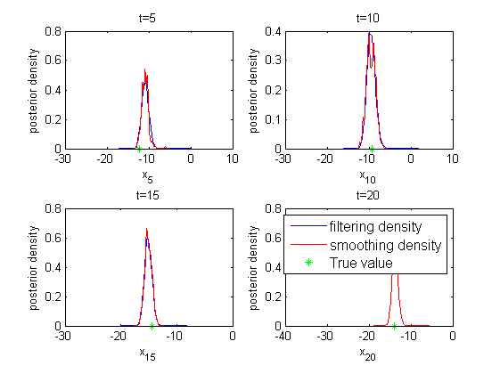
BiiPS Particle Independent Metropolis-Hastings
We now use BiiPS to run a Particle Independent Metropolis-Hastings
Parameters of the PIMH
n_burn = 500; n_iter = 500; thin = 1; n_part = 100;
Run PIMH
biips_pimh_update(model_id, variables, n_burn, n_part); % burn-in iterations [out_pimh, log_marg_like_pimh] = biips_pimh_samples(model_id, variables,... n_iter, n_part, 'thin', thin);
* Initializing PIMH * Updating PIMH with 100 particles and 500 iterations |--------------------------------------------------| 100% |**************************************************| 500 iterations in 20.21 s * Generating PIMH samples with 100 particles and 500 iterations |--------------------------------------------------| 100% |**************************************************| 500 iterations in 19.97 s
Some summary statistics
summary_pimh = biips_summary(out_pimh, 'probs', [.025, .975]);
Posterior mean and quantiles
x_pimh_mean = summary_pimh.x.mean; x_pimh_quant = summary_pimh.x.quant; figure('name', 'PIMH: Posterior mean and quantiles') fill([1:t_max, t_max:-1:1], [x_pimh_quant(1,:), fliplr(x_pimh_quant(2,:))],... [.7 .7 1], 'edgecolor', 'none') hold on plot(x_pimh_mean, 'linewidth', 3) xlabel('Time') ylabel('Estimates') legend({'95 % credible interval', 'PIMH Mean Estimate'})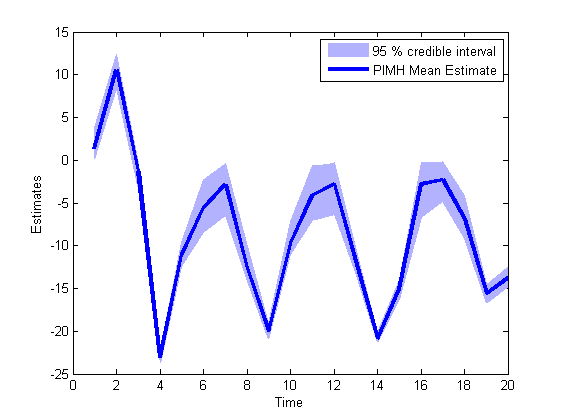
Trace of MCMC samples
time_index = [5, 10, 15, 20]; figure('name', 'PIMH: Trace samples') for k=1:length(time_index) tk = time_index(k); subplot(2, 2, k) plot(out_pimh.x(tk, :)) hold on plot(0, data.x_true(tk), '*g'); xlabel('Iterations') ylabel('PIMH samples') title(['t=', num2str(tk)]); end legend({'PIMH samples', 'True value'});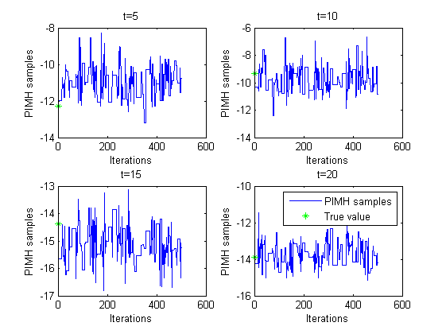
Histograms of posteriors
figure('name', 'PIMH: Histograms Marginal Posteriors') for k=1:length(time_index) tk = time_index(k); subplot(2, 2, k) hist(out_pimh.x(tk, :), 20); hold on plot(data.x_true(tk), 0, '*g'); xlabel(['x_{' num2str(tk) '}']); ylabel('posterior density'); title(['t=', num2str(tk)]); end legend({'posterior density', 'True value'});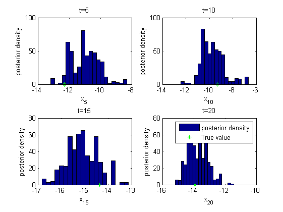
Kernel density estimates of posteriors
kde_estimates_pimh = biips_density(out_pimh); figure('name', 'PIMH: KDE estimates Marginal posteriors') for k=1:length(time_index) tk = time_index(k); subplot(2, 2, k) plot(kde_estimates_pimh.x(tk).x, kde_estimates_pimh.x(tk).f); hold on plot(data.x_true(tk), 0, '*g'); xlabel(['x_{' num2str(tk) '}']); ylabel('posterior density'); title(['t=', num2str(tk)]); end legend({'posterior density', 'True value'}, 'fontsize', 12);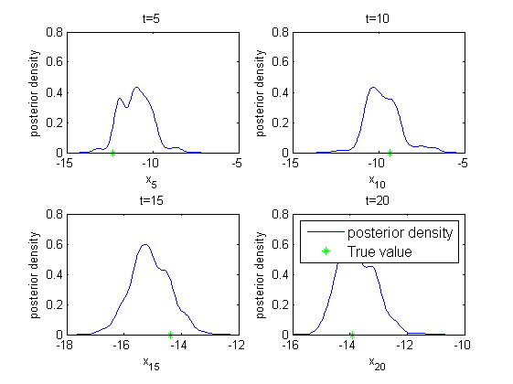
Clear model
biips_clear(model_id)